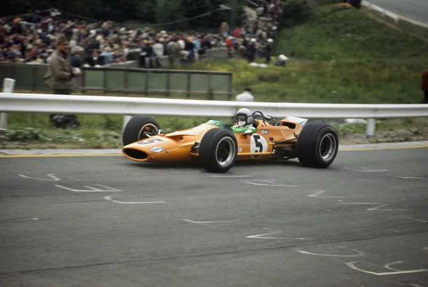
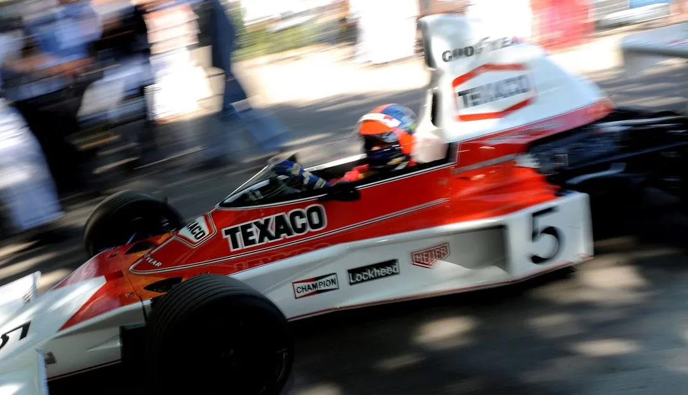
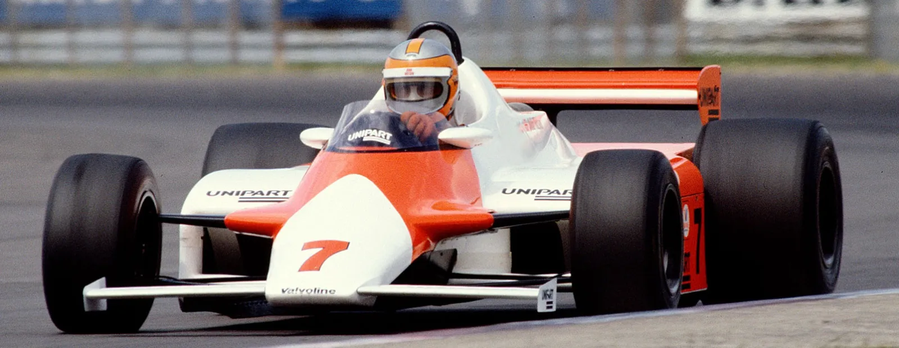
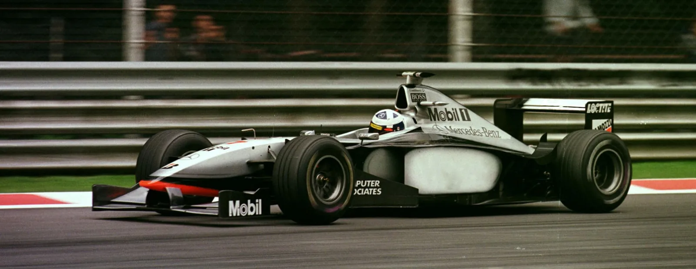
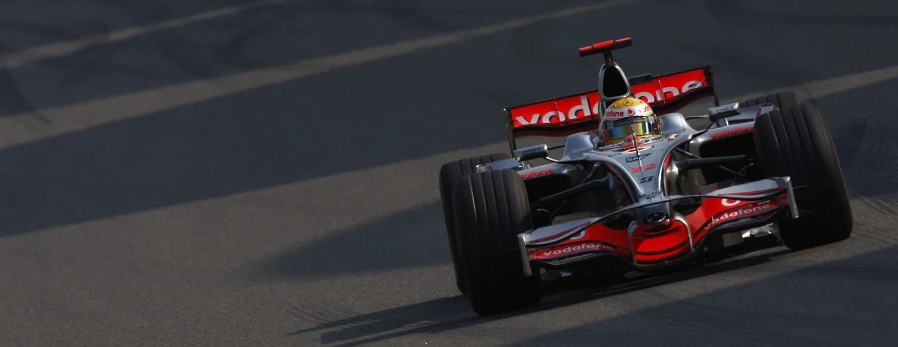
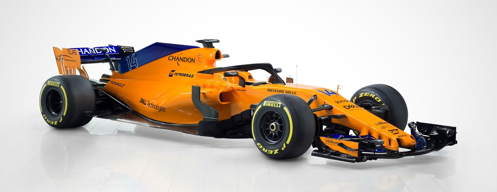

This essay reviews the development of McLaren’s Formula 1 cars from the team’s entry in 1966 to the modern era. It highlights key technological turning points the team’s
grassroots origins and early chassis innovations, the carbon-fibre revolution of the early 1980s, the turbo era and aerodynamic refinement that produced the MP4/4’s dominance,
later organizational and power-unit shifts (including the difficult 2015–2017 Honda era), and recent adaptation to the 2022 regulations. By analysing both technical innovation
and organisational change, the essay highlights how McLaren has remained one of Formula 1’s most forward-thinking and resilient teams.
Introduction
Since entering Formula 1 in 1966, McLaren has grown from a small constructor founded by Bruce McLaren into one of the sport’s most successful and technologically influential
teams. Throughout its history, McLaren has repeatedly introduced engineering innovations that have reshaped Formula 1 design principles, including the first carbon-fibre
monocoque and some of the most aerodynamically refined cars of their eras (Hilton, 2019). This essay examines the evolution of McLaren’s car development across five key phases,
highlighting how regulation, technology, and organisational advancements have shaped the team’s engineering direction (Hilton, 2014).

Figure 1
1966 - 1976
McLaren’s first car, the M2B (as shown above), was notable for its use of Mallite, a lightweight balsa-aluminium composite. Although the material proved difficult to work with, its use demonstrated the
team’s readiness to explore alternatives beyond conventional aluminium monocoques (McLaren, 2023). During the early 1970s McLaren refined its aerodynamic understanding. The M7C and later the M19
incorporated increasingly sophisticated wing structures as the team responded to the aerodynamic arms race that was reshaping Formula 1 (Henry, 2013). The breakthrough came with the M23, introduced in
1973. This chassis combined aerodynamic stability, strong packaging around the Cosworth DFV engine, and reliability, enabling McLaren to secure their first Drivers’ and Constructors’ Championships in
1974 (Saward, 2017). The M23’s longevity meant it remained competitive for several season illustrated McLaren’s growing mastery of mechanical and aerodynamic harmony.

Figure 2
The 1980s
The most influential development in McLaren’s history occurred in 1981 with John Barnard’s MP4/1, the first Formula 1 car built around a carbon-fibre monocoque. Compared to aluminium, carbon fibre
offered greater rigidity and vastly improved crash protection while reducing structural weight (Hughes, 2005). The durability of the design was confirmed dramatically when John Watson survived a major
crash at Monza that year. The technology was rapidly adopted across the sport, making carbon fibre the foundation of all modern Formula 1 chassis (Hilton, 2019).
This material innovation became the industry standard, transforming not just McLaren’s design approach but the entire sport (Saward, 2010). The team’s work with carbon fibre also marked a shift toward
advanced manufacturing and more systematic engineering processes under Ron Dennis, who prioritised precision, long-term planning, and synergy between design departments. The MP4/4, designed for the
1988 season, remains one of the most dominant Formula 1 cars ever built, winning 15 of 16 races (Hughes, 2018). With its ultra-low profile, refined aerodynamics, and the Honda RA168-E engine, the car
demonstrated near-perfect synergy between power unit and chassis.

Figure 3
The 1990s
The 1990s brought significant regulatory changes and the rise of electronic driver aids. McLaren continued to integrate electronic systems such as semi-automatic gearboxes and advanced engine management.
Although competitive, the team faced stiff competition from Williams, whose active suspension gave them a technological edge (Hughes, 2005). A major turning point came in 1997 with the arrival of designer
Adrian Newey. His impact was immediate: the MP4/13, developed for the 1998 season, featured exceptional aerodynamic efficiency with refined airflow management, innovative packaging around the Mercedes
FO110 engine, and clever management of the new narrow-track regulations implemented by the FIA (Saward, 2017). This period showed the adaptability of Mclaren as a F1 team.

Figure 4
The 2000s to 2019
During the 2000s McLaren remained a front-running team, producing several highly competitive cars, such as the MP4-20 in 2005 and the MP4-22 in 2007, the latter helping Lewis Hamilton to one of the most
impressive rookie performances in history (Hughes, 2018). These cars reflected increasing use of computational fluid dynamics (CFD), advanced materials, and electronically controlled systems. However,
McLaren’s technical structure experienced turbulence. The “Spygate” scandal in 2007 disrupted the organisation, and the subsequent seasons saw fluctuating performance. Still, the MP4-23 of 2008 secured
the Drivers’ Championship with Hamilton, illustrating the team’s resilience. The transition to the hybrid era in 2014 marked a significant engineering challenge. The complex turbo-hybrid power units
demanded unprecedented integration of engine, energy recovery systems, cooling structures, and chassis design (FIA, 2014). McLaren’s renewed partnership with Honda in 2015 intended to recreate their 1980s
glory proved disappointing. Honda’s early hybrid power units suffered from chronic reliability issues, power deficits and thermal inefficiencies, which severely restricted McLaren’s chassis development
(Hughes, 2015). These also limited the aerodynamic performance of the car which further led to McLaren ending the partnership with Honda and switching to Renault in 2017.

Figure 5 and 6
2019 till present (2025)
From 2019 onward, McLaren undertook substantial restructuring to improve technical direction, simulation accuracy and development speed. The MCL34 and MCL35 demonstrated improved correlation between
wind-tunnel data and on-track performance, reflecting a more organised engineering workflow (McLaren, 2023). The 2022 regulations marked the biggest aerodynamic reset in decades, reintroducing ground-effect
aerodynamics. McLaren’s initial interpretation was conservative, leading to limitations in low-speed performance. However, the team adopted a more flexible upgrade strategy in 2023 and 2024, delivering
significant mid-season performance gains (Saward, 2022). The new front wing they created with the advanced aerodynamic features also giving them the edge over other teams.
Figure 7
Conclusion
McLaren’s evolution from its experimental beginnings in the 1960s to its technologically sophisticated modern identity demonstrates a persistent commitment to innovation. McLaren’s development history
mirrors the evolving technological landscape of Formula 1. The team’s pioneering carbon-fibre work, aerodynamic breakthroughs, and engineering resilience have shaped not only their own success but the
broader technical landscape of Formula 1. Although recent decades have brought challenges, the team’s renewed technical coherence and strategic reinvestment suggest a promising trajectory. McLaren’s legacy
lies not just in past successes but in its sustained commitment to engineering creativity and resilience.
Figure 1 again
References
All images (Figures 1-7) from https//www.mclaren.com
FIA (2014) FIA Formula One Technical Regulations 2014. Fédération Internationale de l’Automobile.
Henry, A. (2013) Formula 1 Technical Analysis: 1990–2012. London: Haynes Publishing.
Hilton, C. (2019) McLaren: The Engineering Story. London: Evro Publishing.
Hughes, M. (2018) The Complete History of Formula One Cars. London: MotorSport Publishing.
Hughes, M. (2023) ‘McLaren’s 2022–23 Development Path’, Motorsport Magazine, July.
McLaren (2022) McLaren Heritage: Car History Archive. McLaren Racing Limited.
McLaren (2023) Technical Development and Facilities Report. McLaren Racing Limited.
Saward, J. (2017) Grand Prix Engineering: Innovations and Developments. London: GP Publishing.
Saward, J. (2017) Grand Prix Engineering: Innovations and Developments. London: GP Publishing.
Saward, J. (2010) Grand Prix Engineering: The Evolution of the Formula 1 Car. Oxford: Vitesse Publishing.
Saward, J. (2022) ‘Interpreting the 2022 Regulations: Team Approaches and Early Trends’, Grand Prix Technical Review, March.
Development of McLarens F1 car and their advances in aerodynamicsChange Button Colour

 Figure 7
Figure 7